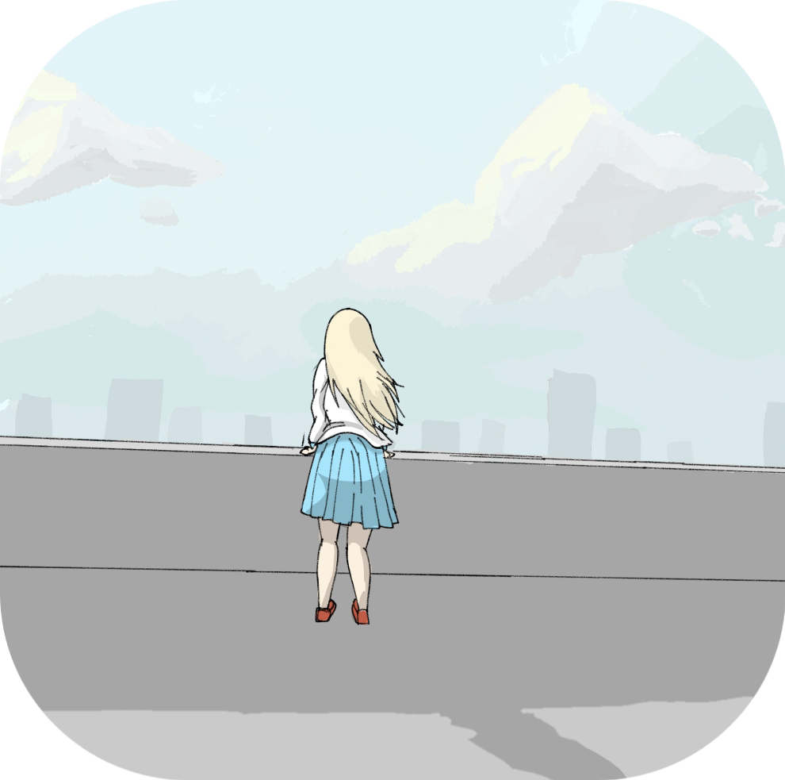
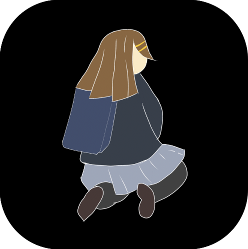

| 主页 |
建站的原因 莱清风 |
|
2023年7月31日 在见识了别人为了自己喜欢的东西搭建出一个网站，我萌发了一颗搭建网站的心，在自学了一天后，我先后学会了HTML,CSS，目前JS还在学习当中。为了检验我的学习成果，我决心搭建属于我的个人网站，在经过一个通宵，我成功搭建了个人网站（随带说一下，网站里的头像都是我画的，不用怕版权问题，关于我的绘画方面，以后会专门做一期的）目前我没有买域名，没有备案。这个网站是我的开始。 |
网络用语解答 i-kon |
|
2023年8月2日 书记舞 |
|
个人主页 如有错误或侵犯贵公司版权请联系站长 2528197707@qq.com |